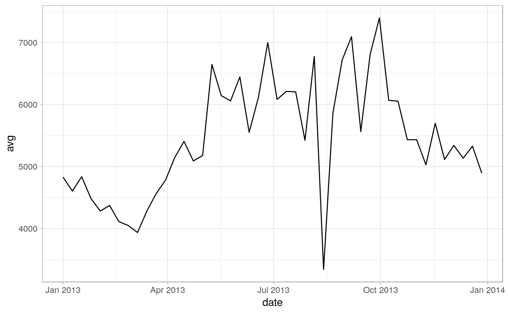

Function used to extract values of a single- or multi- band raster for pixels corresponding to the features of a vector (Polygon, Point or Line)
extract_rast(in_rast, in_vect, na.value = NULL, rast_type = "continuous", selbands = NULL, rastres = NULL, id_field = NULL, summ_data = TRUE, full_data = TRUE, comp_quant = FALSE, comp_freq = FALSE, long_format = TRUE, FUN = NULL, small = TRUE, na.rm = TRUE, maxchunk = 5e+07, join_feat_tbl = TRUE, join_geom = TRUE, keep_null = FALSE, verbose = TRUE, ncores = NULL, parallel = FALSE)
| in_rast | input raster. Can be either:
|
|---|---|
| in_vect | input vector object containing zones from which data has to be extracted. Can be either:
|
| na.value | DESCRIPTION |
| rast_type |
|
| selbands |
|
| rastres |
|
| id_field |
|
| summ_data |
|
| full_data |
|
| comp_quant |
|
| comp_freq |
|
| long_format |
|
| FUN |
|
| small |
|
| na.rm |
|
| maxchunk | Maximum chunk size (provisional), Default: 5e+06 |
| join_feat_tbl |
|
| join_geom |
|
| keep_null |
|
| verbose |
|
| ncores |
|
out_list list containing two elements:
1.out_list$stats contains summary statistics
2.out_list$alldata contains the data of all pixels extracted
(see examples).
# See [here](https://lbusett.github.io/sprawl/articles/articles/extract_rast_example.html) # for a worked example ! library(sprawl) library(sprawl.data) library(raster) library(ggplot2)#> #>#> #> #>in_polys <- read_vect(system.file("extdata/shapes","lc_polys.shp", package = "sprawl.data"), stringsAsFactors = TRUE) in_rast <- read_rast(system.file("extdata/MODIS_test", "EVIts_test.tif", package = "sprawl.data")) in_rast <- raster::setZ(in_rast, doytodate(seq(1,366, by = 8), year = 2013)) out <- extract_rast(in_rast, in_polys, verbose = FALSE, ncores = 1, id_field = "lc_type") # Statistics for the different polygons head(out$stats)#> Simple feature collection with 6 features and 13 fields #> geometry type: POLYGON #> dimension: XY #> bbox: xmin: 12918420 ymin: 1752797 xmax: 12920610 ymax: 1755103 #> epsg (SRID): NA #> proj4string: +proj=sinu +lon_0=0 +x_0=0 +y_0=0 +a=6371007.181 +b=6371007.181 +units=m +no_defs #> # A tibble: 6 x 14 #> lc_type band_n date n_pix n_pix_val avg med sd min max id #> <fct> <dbl> <date> <int> <int> <dbl> <dbl> <dbl> <dbl> <dbl> <dbl> #> 1 forest… 1 2013-01-01 61 61 4831. 4747 541. 3731 5987 1 #> 2 forest… 2 2013-01-09 61 61 4605. 4648 511. 3665 5547 1 #> 3 forest… 3 2013-01-17 61 61 4838. 4834 557. 3640 5827 1 #> 4 forest… 4 2013-01-25 61 61 4485. 4411 474. 3285 5275 1 #> 5 forest… 5 2013-02-02 61 61 4284. 4237 499. 3469 5318 1 #> 6 forest… 6 2013-02-10 61 61 4375. 4302 471. 3317 5363 1 #> # … with 3 more variables: category <fct>, sup_catego <fct>, geometry <POLYGON #> # [m]>ggplot(out$stats, aes(x = date, y = avg, group = lc_type, color = lc_type)) + geom_line() + facet_wrap(~lc_type) + theme_light()# Extract data for one polygon polydata <- dplyr::filter(out$stats, lc_type == "forest_1") ggplot(polydata, aes(x = date, y = avg)) + geom_line() + theme_light()#> Simple feature collection with 6 features and 9 fields #> geometry type: POINT #> dimension: XY #> bbox: xmin: 12918200 ymin: 1754797 xmax: 12919360 ymax: 1754797 #> epsg (SRID): NA #> proj4string: +proj=sinu +lon_0=0 +x_0=0 +y_0=0 +a=6371007.181 +b=6371007.181 +units=m +no_defs #> # A tibble: 6 x 10 #> lc_type band_n date n_pix_val N value id category sup_catego #> <fct> <int> <date> <int> <int> <dbl> <dbl> <fct> <fct> #> 1 forest… 1 2013-01-01 61 1 4454 1 Forest Vegetation #> 2 forest… 1 2013-01-01 61 2 4260 1 Forest Vegetation #> 3 forest… 1 2013-01-01 61 3 4224 1 Forest Vegetation #> 4 forest… 1 2013-01-01 61 4 4344 1 Forest Vegetation #> 5 forest… 1 2013-01-01 61 5 4489 1 Forest Vegetation #> 6 forest… 1 2013-01-01 61 6 4970 1 Forest Vegetation #> # … with 1 more variable: geometry <POINT [m]>